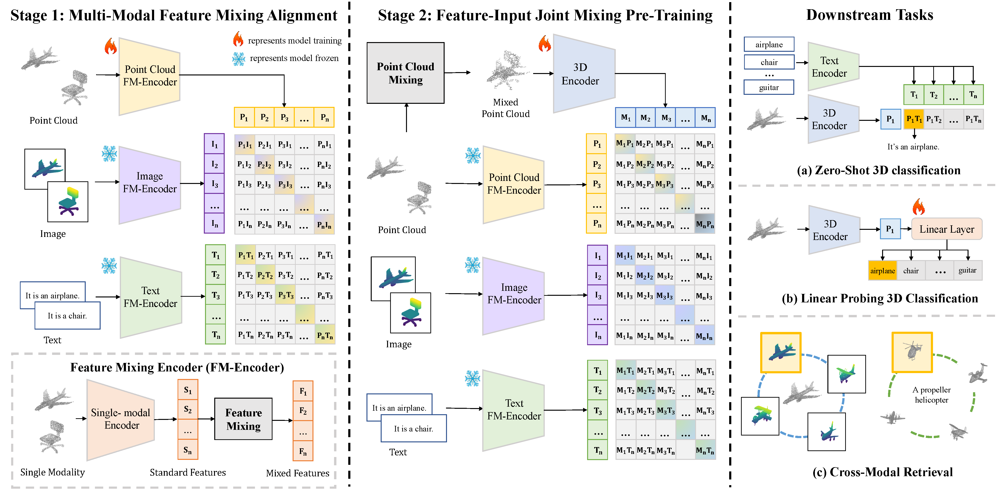

Abstract
We introduce MM-Mixing, a multi-modal mixing alignment framework for 3D understanding. MM-Mixing applies mixing-based methods to multi-modal data, preserving and optimizing cross-modal connections while enhancing diversity and improving alignment across modalities. Our proposed two-stage training pipeline combines feature-level and input-level mixing to optimize the 3D encoder. The first stage employs feature-level mixing with contrastive learning to align 3D features with their corresponding modalities. The second stage incorporates both feature-level and input-level mixing, introducing mixed point cloud inputs to further refine 3D feature representations. MM-Mixing enhances intermodality relationships, promotes generalization, and ensures feature consistency while providing diverse and realistic training samples.

We demonstrate that MM-Mixing significantly improves baseline performance across various learning scenarios, including zero-shot 3D classification, linear probing 3D classification, and cross-modal 3D shape retrieval. Notably, we improved the zero-shot classification accuracy on ScanObjectNN from 51.3% to 61.9%, and on ObjaverseLVIS from 46.8% to 51.4%. Our findings highlight the potential of multi-modal mixing-based alignment to significantly advance 3D object recognition and understanding while remaining straightforward to implement and integrate into existing frameworks.
|